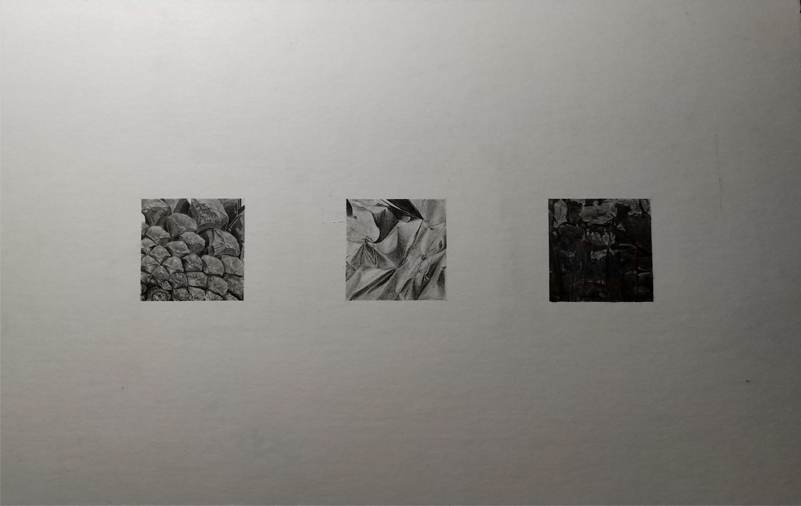
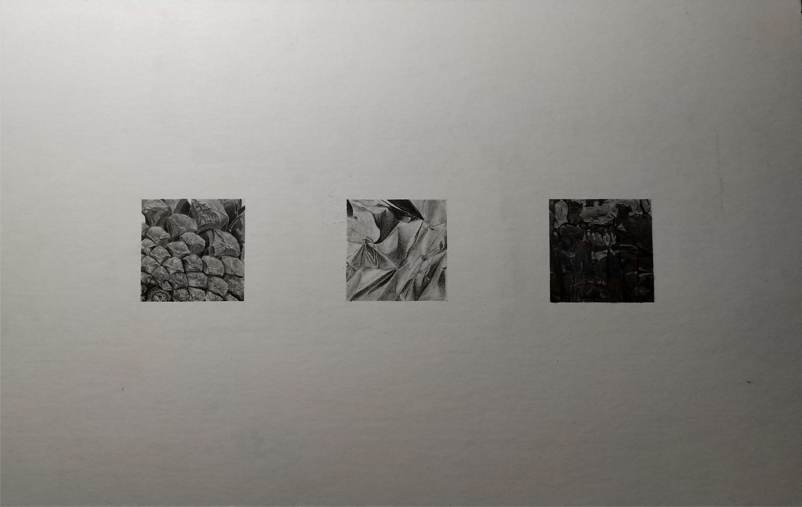
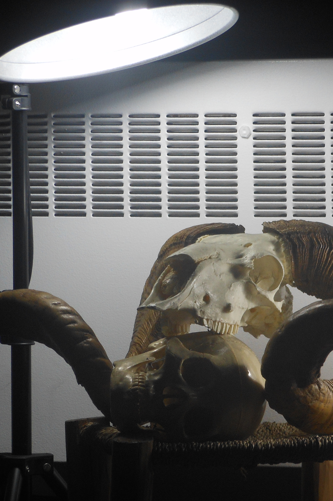
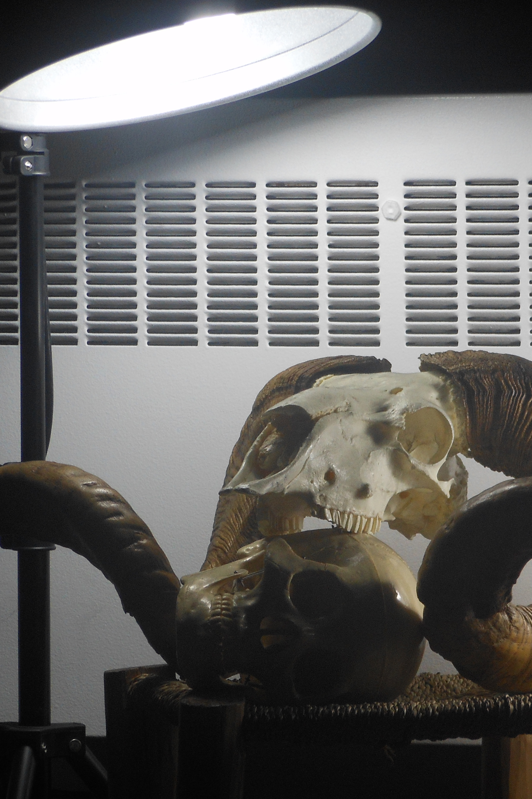

Drawing Projects
Drawing was a skill that I acquired throughout two semesters of my College journey. I learned about visualization, sizing, lighting, shadows and plenty of other techniques. At the end of it all, I saw the world differently, noticing previously unseen visual details in a day to day life and just did something that I enjoyed.
 


Tree bark
A small precise pencil drawing of a Tree Bark.
Size: 6cm x 6cm
Date: 2018


Pinecone
A small precise pencil drawing of a Pinecone part.
Size: 6cm x 6cm
Date: 2018


Tin Foil
A small precise pencil drawing of a Tin Foil piece.
Size: 6cm x 6cm
Date: 2018
 


Two Sculls
A large charcoal drawing of Two Sculls using the eraser reduction technique.
Size: 30'' x 40''
Date: 2018